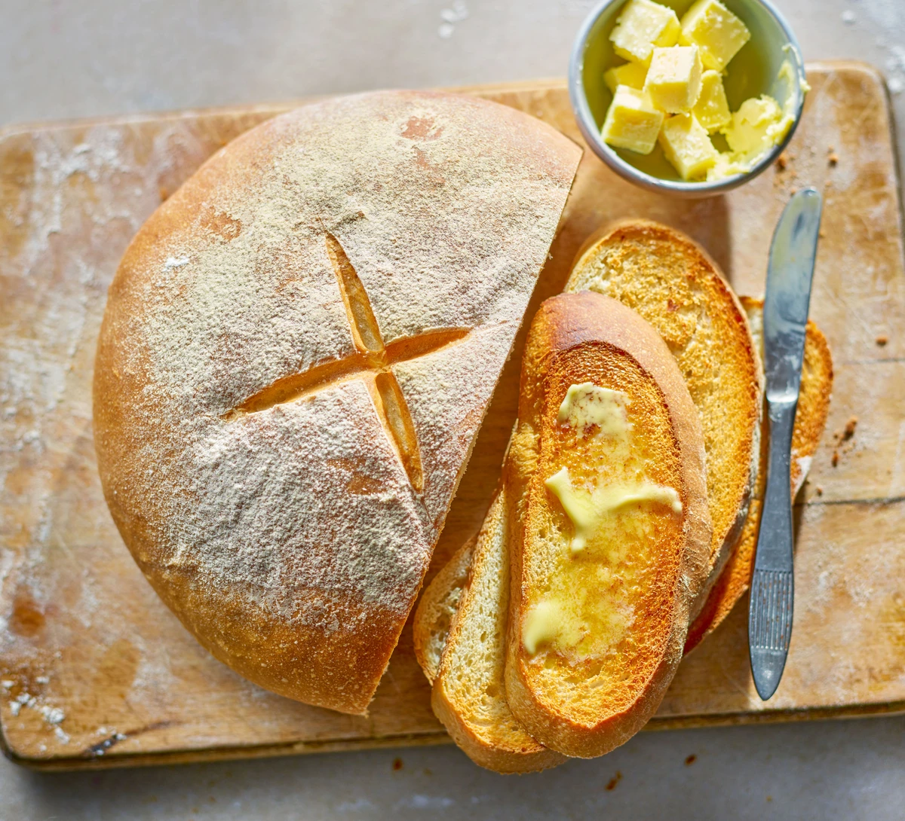

Bread

A great recipe for an electric breadmaker –
or do it the traditional way.
Ingredients
- 500g strong white flour, plus extra for dusting
- 2 tsp salt
- 7g sachet fast-action yeast
- 3 tbsp olive oil
- 300ml water
Method
-
Mix 500g strong white flour, 2 tsp salt and a 7g sachet of fast-action yeast in a large bowl.
-
Make a well in the centre, then add 3 tbsp olive oil and 300ml water, and mix well. If the dough seems a little stiff, add another 1-2 tbsp water and mix well.
-
Tip onto a lightly floured work surface and knead for around 10 mins.
-
Once the dough is satin-smooth, place it in a lightly oiled bowl and cover with cling film. Leave to rise for 1 hour until doubled in size or place in the fridge overnight.
-
Line a baking tray with baking parchment. Knock back the dough (punch the air out and pull the dough in on itself) then gently mould the dough into a ball.
-
Place it on the baking parchment to prove for a further hour until doubled in size.
-
Heat oven to 220C/fan 200C/gas 7.
-
Dust the loaf with some extra flour and cut a cross about 6cm long into the top of the loaf with a sharp knife.
-
Bake for 25-30 mins until golden brown and the loaf sounds hollow when tapped underneath. Cool on a wire rack.